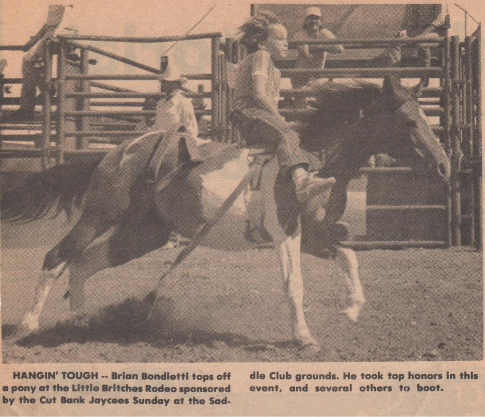

The Little Britches Rodeo
August 2023

I have a photograph of myself I keep in my keepsakes box. A local newspaper clipping dated July 18, 1984, which means I would have been aged seven, going on eight. The photograph was taken by my auntie Judy, who was employed by the newspaper at the time. If you knew this auntie of mine, your first thought would be “that Judy?” You would be trying to figure out how that woman could possibly hold a steady job, let alone at a newspaper.
The subject of the photograph is me in a rodeo on a young ‘bucking’ bronc. I am participating in the Little Britches Rodeo. I do somehow remember the outfit I was wearing. It was a blue shirt with white stripes on the arms. I had tan corduroy pants and blue Pony brand runners. You can never say my mom didn’t know how to dress me. The caption for the photograph reads: “HANGIN TOUGH – Brian Bondietti tops off a pony at the Little Britches Rodeo sponsored by the local Jaycees Sunday at the Saddle Club grounds. He took top honors in this event, and several others to boot.”
I didn’t take top honors. I’m pretty sure I got the white ‘honorable mention’ ribbon. One irony is that I did get blue ribbons for some of the other animals, but I fell off every single one of them within seconds of coming out of the chutes. With the pony, I was one of the few kids who didn’t get bucked off, so I felt I deserved better than an honorable mention. One truth I had to admit when I was older was the pony only bucked once as it came out of the chute and proceeded to sprint around the arena until the rodeo clowns could catch up with us, so maybe an honorable mention was fair. One girl’s saddle swung upside down and she still hung on somehow until the horse came to a stop, another kid fell off and got stepped on by his steed.
After the ride, I remember my mom appearing next to the fence and making me come to the bleachers. She was super upset about it. I wasn’t supposed to be participating in the rodeo. Mom was just out there to visit her sisters and swoon over horses and handsome men. I was supposed to be running around the grounds playing with my cousin Dustin, ‘being good’. Dustin’s stepdad (not pictured) was trying his best to corral that little wild-child, and had him signed up for lots of things, including this rodeo. If Dustin got to ride an animal, I’d get jealous and ask the men running the chutes if I could ride whatever animal he was on, and so I ended up participating in the rodeo. Three of the half-dozen or so men running the chutes were uncles-in-law, two were stepdads to my boy cousins. I have no clue where my stepdad was on that day. Truth is, I’m glad he wasn’t there, or I probably would have refused to ride anything, just in case he would have been proud of me.
In the photograph, smiling at me is another one of those uncles-in-law I choose not to name. He is the one who beat Auntie Judy (the photographer) so badly she couldn’t leave the house for weeks, I don’t think it’s surprising at all she couldn’t keep a job ever since. At the time, this uncle was my favorite out of all the shitty uncles and stepdads. He was of the land. He wasn’t some suburbanite fuckboy who read a bunch of outside magazines in the nineteen-seventies. He wasn’t some cokehead that got shipped in by Burlington-Northern. He was part-native, like my extended family, and he grew up next to them. He and the rest of that culture were very decidedly ‘free-range’ parents, and his daughter, my cousin Missy, was tough and self-possessed. If it wasn’t for how he treated my aunt, there might have been one bright light in that group of angry men I grew up with. He was always kind to me, even after he split up with Judy, he always took time to say hello and share good memories of my dad with me. He ended up taking his savings from a lifetime on the oilfields and then buying and operating a local bar in town until he passed away from cancer.
This uncle had the same beaming smile as he had in the picture when I asked if I could also ride a sheep, then pig, then calf, on up to the pony. The only reason I didn’t end up on a steer was my concerned mom. Dustin was already panicking knowing he would have to ride the steer because of our game of one-upmanship. My protective mommy saved Dustin’s day, and he didn’t have to ride the steer.
The uncle set me up on that pony in the chute and tightened the rope over my glove as he and the other hands gave me sage advice about how to ride a bucking bronc. He knew how hard it was to slip my over-worried mom’s grasp. It was something I had to do often to get what I needed out of life. I could tell part of the glint in his eyes when he put me on the pony was his pride in helping a little country boy defy his mommy. Someone had to toughen that kid up.